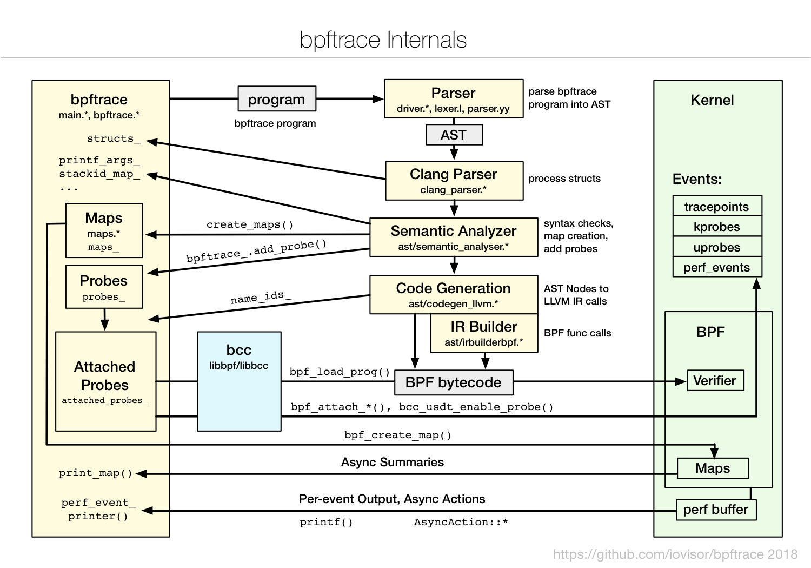

BPF
Table of Contents
- 1. 引言
- 2. 技术背景
- 3. 性能分析
- 4. BCC
- 5. bpftrace
1. 引言
1.1. BPF和eBPF
BPF是伯克利数据包过滤器的缩写，最初作用是提升网络包过滤工具的性能，后来BPF进化为一个更通用的执行引擎，能够完成多种任务，例如创建先进的性能分析工具。
简单来说，BPF能够提供一种机制：在各种内核事件和应用程序事件发生时运行一小段程序。
BPF由指令集、存储对象和辅助函数等及部分组成。由于BPF采用了虚拟指令集规范，也可以将其视作一种虚拟机实现。这些指令由Linux内核的BPF运行时模块执行，模块提供两种执行机制：一个解释器和一个将BPF指令动态转化为本地化指令的即时（JIT）编译器。在实际执行之前，BPF指令必须先通过验证器（verifer）的安全性检查，以确保BPF程序不会崩溃或者损坏内核。扩展后的BPF缩写为eBPF，但通常仍然成为BPF。
1.2. 跟踪、嗅探、采样、剖析和可观测性
跟踪、嗅探、事件记录通常指的是同一回事，是基于事件的记录方式。
采样(sampling)工具通过获取全部观测量的子集来描绘目标的大致图像;这也被称为性能剖析样本或profiling。
可观测性（observability）是指通过全面观测来理解一个系统，可以实现这一目标的工具就可以归类为可观测性工具，包括跟踪工具、采样工具和基于固定计数器的工具。但是不包含基准测量（benchmark）工具，此类工具会在系统上模拟业务负载，会更改系统的状态。
1.3. BCC、bpftrace和IO Visor
直接通过BPF指令编写BPF程序相当繁琐，所以诞生了提供高级语言编程支持的BPF前端；在跟踪用途方面，主要的前端是BCC和bpftrace。
BCC（BPF编译器集合）提供了编写内核BPF程序的C语言环境，也提供了其他语言（Python、Lua和C++）环境来实现用户端接口。也是libbcc和libbpf库的前身，这两个库提供了使用BPF程序对事件进行观测的库函数。
bpftrace是一个新出现的前端，提供了专门用于创建BPF工具的高级语言支持。
bpftrace在编写功能强大的单行程序、短小的脚本方面比较理想；BCC则更适合开发复杂的脚本和作为后台进程使用。
ply也是BPF的前端，其设计目标是尽可能轻量化并且将依赖最小化，比较适合在嵌入式linux环境下使用。
BCC和bpftrace不在内核代码仓库中，而是属于Github上的一个名为IO Visor的Linux基金会项目。
1.4. BPF跟踪的能见度
BPF可以在整个软件栈范围内提供能见度，允许我们随时根据需要开发新的工具和监测功能。在生产环境中可以立即部署BPF跟踪程序，不需要重启系统，也不需要以特殊方式重启应用。
1.5. 动态插桩：kprobes和uprobes
动态插桩也叫动态跟踪技术–在生产环境中对正在运行的软件插入观测点的能力。
Linux以uprobes形式增加了对用户态函数的动态插桩支持。BPF跟踪工具同时支持kprobes和uprobes。
一下列举了bpftrace使用的uprobes和kprobes探针定义的例子：
| 探针 | 描述 |
|---|---|
| kprobe:vfs_read | 在内核函数vfs_read()的开始位置进行插桩 |
| kretprobe:vfs_read | 在内核函数的vfs_read()的返回位置进行插桩 |
| uprobe:/binbash:readline | 在/bin/bash程序中的readline()函数的开始位置进行插桩 |
| uretprobe:/bin/bash:readline | 在/bin/bash程序中的readline()函数的返回位置进行插桩 |
动态插桩缺点： 随着软件版本的升级，被插桩的函数有可能被重新命名或者被移除，因此可能会导致工具不可用。
1.6. 静态插桩：tracepoint和UDST
静态插桩技术会将稳定的时间名称编码到软件代码中，由开发者进行维护。BPF跟踪工具支持内核的静态插桩技术，也支持用户态的静态定义跟踪插桩技术USDT。
| 探针 | 描述 |
|---|---|
| tracepoint:syscalls:sys_enter_open | 对open系统调用进行插桩 |
| usdt:/usr/sbin/mysqld:query_start | 对/usr/sbin/mysqld程序中的query_start探针进行插桩 |
注意： 当需要开发自己的BPF工具时，应该首先尝试使用静态跟踪技术（跟踪点或者USDT），如果不能满足要求时，再使用动态跟踪技术（kprobes和uprobes）。
1.7. bpftrace跟踪open()
可以使用现有的静态插桩点（syscall:sys_enter_open）。
$ sudo bpftrace -e 'tracepoint:syscalls:sys_enter_open { printf("%s %s\n", comm, str(args->filename)); }'
Attaching 1 probe...
^C
观察以上命令没有任何输出，实际上是由于我们遗漏了一些open系统调用跟踪点，使用以下命令列出所有open跟踪点。
列出跟踪点命令：
$ sudo bpftrace -l 'tracepoint:syscalls:sys_enter_open*'
tracepoint:syscalls:sys_enter_open_by_handle_at
tracepoint:syscalls:sys_enter_open_tree
tracepoint:syscalls:sys_enter_open
tracepoint:syscalls:sys_enter_openat
tracepoint:syscalls:sys_enter_openat2
统计open调用的信息：
$ sudo bpftrace -e 'tracepoint:syscalls:sys_enter_open* { @[probe] = count(); }'
Attaching 5 probes...
^C
@[tracepoint:syscalls:sys_enter_openat]: 13
open跟踪点的详细信息可以参考 opensnoop.bt 的实现，bpftrace自带了opensnoop.bt工具。
1.8. BCC：跟踪open()
BCC也提供了跟踪open系统调用的工具 opensnoop 。
$ sudo opensnoop-bpfcc -h usage: opensnoop-bpfcc [-h] [-T] [-U] [-x] [-p PID] [-t TID] [--cgroupmap CGROUPMAP] [--mntnsmap MNTNSMAP] [-u UID] [-d DURATION] [-n NAME] [-e] [-f FLAG_FILTER] Trace open() syscalls optional arguments: -h, --help show this help message and exit -T, --timestamp include timestamp on output -U, --print-uid print UID column -x, --failed only show failed opens -p PID, --pid PID trace this PID only -t TID, --tid TID trace this TID only --cgroupmap CGROUPMAP trace cgroups in this BPF map only --mntnsmap MNTNSMAP trace mount namespaces in this BPF map only -u UID, --uid UID trace this UID only -d DURATION, --duration DURATION total duration of trace in seconds -n NAME, --name NAME only print process names containing this name -e, --extended_fields show extended fields -f FLAG_FILTER, --flag_filter FLAG_FILTER filter on flags argument (e.g., O_WRONLY) examples: ./opensnoop # trace all open() syscalls ./opensnoop -T # include timestamps ./opensnoop -U # include UID ./opensnoop -x # only show failed opens ./opensnoop -p 181 # only trace PID 181 ./opensnoop -t 123 # only trace TID 123 ./opensnoop -u 1000 # only trace UID 1000 ./opensnoop -d 10 # trace for 10 seconds only ./opensnoop -n main # only print process names containing "main" ./opensnoop -e # show extended fields ./opensnoop -f O_WRONLY -f O_RDWR # only print calls for writing ./opensnoop --cgroupmap mappath # only trace cgroups in this BPF map ./opensnoop --mntnsmap mappath # only trace mount namespaces in the map
- bpftrace工具通常比较简单，功能单一，只做一件事。
- BCC工具则一般比较复杂，支持的运行模式也比较多。
2. 技术背景
BPF工作方式： 最终用户使用BPF虚拟机的指令集（BPF字节码）定义过滤表达式，然后传递给内核，由解释器执行。这使得包过滤可以在内核中直接进行，避免了向用户态进程复制每个数据包，从而提升数据包过滤的性能。BPF还提供了安全性保障，用户定义的过滤器在执行前必须首先通过安全性验证。早期的包过滤必须在内核空间执行，安全是一个硬性要求。
最初的BPF现在被称为“经典BPF”，是一个功能有限的虚拟机，有两个寄存器，一个由16个内存槽位组成的临时存储区和一个程序计数器。以上部件均按32位寄存器大小运行。
2.1. ebpf
扩展版的BPF中增加了更多寄存器，并将字长从32位增加至64位，创建了灵活的BPF映射型存储（map），并允许调用一些受限制的内核功能。同时eBPF被设计为可以使用即时编译（JIT），机器指令与寄存器可以一对一映射。这就使得先前的处理器本地指令优化技术，可以重用于BPF之上。BPF验证器也进行了更新以便支持这些扩展，而且能够拒绝任何不安全的代码。
现在eBPF也称为BPF。
| 对比项 | 经典BPF | 扩展版BPF |
|---|---|---|
| 寄存器数量 | 2个：寄存器A和X | 10个：R0～R9，此外R10是只读的帧指针寄存器 |
| 寄存器宽度 | 32位 | 64位 |
| 存储 | 16个内存槽位：M[0-15] | 512字节大小的栈空间，外加无限制的映射型存储 |
| 受限的内核调用 | 非常受限，JIT专用 | 可用，通过bpf_call指令 |
| 支持的时间类型 | 网络数据包、seccomp-BPF | 网络数据包、内核函数、用户态函数、跟踪点、用户态标记、PMC |
bpf优势：
- bpf程序可以执行自定义的延迟计算，统计摘要。
- 具备高效率、生产环境安全的特点。
- 避免从内核向用户空间复制大量数据，直接在内核执行生成结果，传回用户态。
bpf vs 内核模块：
- bpf程序会通过验证器安全性检查，内核模块则可能引入bug
- bpf通过映射提供丰富的数据结构支持
- bpf可以一次编译，在任何地方执行。
- bpf编译不依赖内核编译过程的中间结果。
- bpf提供可以原子性替换bpf程序的能力，在网络领域，如果是内核模块，则需要先卸载，可能中断服务。
当然，内核模块也有优势：在模块中可以使用内核设施和内核函数。
bpf程序编写：
- LLVM：LLVM编译器可以将BPF作为编译目标体系结构，可以使用LLVM支持的高级语言来编写
- BCC：支持C语言编写
- bpftrace：提供自定义的高级语言
2.1.1. bpftool
该工具可以查看和操作BPF对象，包括BPF程序和对应的映射表。
bpftool对象类型：
$ bpftool --help
Usage: bpftool [OPTIONS] OBJECT { COMMAND | help }
bpftool batch file FILE
bpftool version
OBJECT := { prog | map | link | cgroup | perf | net | feature | btf | gen | struct_ops | iter }
OPTIONS := { {-j|--json} [{-p|--pretty}] | {-d|--debug} | {-l|--legacy} |
{-V|--version} }
每类对象可以都有帮助文档：
$ bpftool prog help
Usage: bpftool prog { show | list } [PROG]
bpftool prog dump xlated PROG [{ file FILE | opcodes | visual | linum }]
bpftool prog dump jited PROG [{ file FILE | opcodes | linum }]
bpftool prog pin PROG FILE
bpftool prog { load | loadall } OBJ PATH \
[type TYPE] [dev NAME] \
[map { idx IDX | name NAME } MAP]\
[pinmaps MAP_DIR]
bpftool prog attach PROG ATTACH_TYPE [MAP]
bpftool prog detach PROG ATTACH_TYPE [MAP]
bpftool prog run PROG \
data_in FILE \
[data_out FILE [data_size_out L]] \
[ctx_in FILE [ctx_out FILE [ctx_size_out M]]] \
[repeat N]
bpftool prog profile PROG [duration DURATION] METRICs
bpftool prog tracelog
bpftool prog help
MAP := { id MAP_ID | pinned FILE | name MAP_NAME }
PROG := { id PROG_ID | pinned FILE | tag PROG_TAG | name PROG_NAME }
TYPE := { socket | kprobe | kretprobe | classifier | action |
tracepoint | raw_tracepoint | xdp | perf_event | cgroup/skb |
cgroup/sock | cgroup/dev | lwt_in | lwt_out | lwt_xmit |
lwt_seg6local | sockops | sk_skb | sk_msg | lirc_mode2 |
sk_reuseport | flow_dissector | cgroup/sysctl |
cgroup/bind4 | cgroup/bind6 | cgroup/post_bind4 |
cgroup/post_bind6 | cgroup/connect4 | cgroup/connect6 |
cgroup/getpeername4 | cgroup/getpeername6 |
cgroup/getsockname4 | cgroup/getsockname6 | cgroup/sendmsg4 |
cgroup/sendmsg6 | cgroup/recvmsg4 | cgroup/recvmsg6 |
cgroup/getsockopt | cgroup/setsockopt | cgroup/sock_release |
struct_ops | fentry | fexit | freplace | sk_lookup }
ATTACH_TYPE := { sk_msg_verdict | sk_skb_verdict | sk_skb_stream_verdict |
sk_skb_stream_parser | flow_dissector }
METRIC := { cycles | instructions | l1d_loads | llc_misses | itlb_misses | dtlb_misses }
OPTIONS := { {-j|--json} [{-p|--pretty}] | {-d|--debug} | {-l|--legacy} |
{-f|--bpffs} | {-m|--mapcompat} | {-n|--nomount} |
{-L|--use-loader} }
- bpftool perf
- perf指令显示了那些BPF程序正在通过perf_event_open()进行挂载
$ bpftool perf pid 5034 fd 6: prog_id 33 kprobe func __x64_sys_execve offset 0 pid 5034 fd 8: prog_id 34 kretprobe func __x64_sys_execve offset 0
- bpftool prog show
- 列出BPF全部程序
$ sudo bpftool prog show
3: cgroup_device name sd_devices tag 3650d9673c54ce30 gpl
loaded_at 2023-08-19T08:50:07+0800 uid 0
xlated 504B jited 310B memlock 4096B
4: cgroup_skb name sd_fw_egress tag 6deef7357e7b4530 gpl
loaded_at 2023-08-19T08:50:07+0800 uid 0
xlated 64B jited 55B memlock 4096B
5: cgroup_skb name sd_fw_ingress tag 6deef7357e7b4530 gpl
loaded_at 2023-08-19T08:50:07+0800 uid 0
xlated 64B jited 55B memlock 4096B
6: cgroup_skb name sd_fw_egress tag 6deef7357e7b4530 gpl
loaded_at 2023-08-19T08:50:07+0800 uid 0
xlated 64B jited 55B memlock 4096B
......
- bpftool prog dump xlated id [ID]
- 每个BPF程序都可以通过其ID打印。xlated模式将BPF指令翻译为汇编指令打印出来。
$ sudo bpftool perf
pid 7312 fd 6: prog_id 41 kprobe func __x64_sys_execve offset 0
pid 7312 fd 8: prog_id 42 kretprobe func __x64_sys_execve offset 0
$ sudo bpftool prog dump xlated id 41
int syscall__execve(struct pt_regs * ctx):
; int syscall__execve(struct pt_regs *ctx)
0: (bf) r6 = r1
; struct pt_regs * __ctx = (void *)ctx->di;
1: (79) r7 = *(u64 *)(r6 +112)
; const char __user *filename; bpf_probe_read(&filename, sizeof(filename), &__ctx->di);
2: (bf) r3 = r7
3: (07) r3 += 112
4: (bf) r1 = r10
;
5: (07) r1 += -16
; const char __user *filename; bpf_probe_read(&filename, sizeof(filename), &__ctx->di);
......
- bpftool prog dump xlated id 41 linum
- linum修饰符在输出中增加源代码文件和行信息
- bpftool prog dump xlated id 41 opcodes
- opcodes修饰符输出中增加BPF指令的opcode
- bpftool prog dump xlated id 41 visual
- visual 修饰符可以输出 DOT 格式的控制流信息，用于生成图片。
- bpftool prog dump jited
- 展示经过JIT编译之后的机器码
- bpftool btf
- 可以打印BTF的ID,例如 bpftool btf dump id 5
2.1.2. bpftrace查看BPF指令集
bpftrace -v 脚本名称
2.1.3. bpf API
- bpf辅助函数
- bpf不允许随意调用内核函数，内核专门提供bpf可调用的辅助函数。内核源代码中 include/uapi/linux/bpf.h 文件提供了辅助函数。
- bpf_probe_read()
- BPF中内存访问仅限于BPF寄存器和栈空间（以及通过辅助函数访问的BPF映射表）。访问其他内存需要通过该函数读取，该函数进行安全检查并禁止缺页中断的发生。 还可以将用户空间内容读取到内核空间。
- BPF部分系统调用命令
- 用户程序可以通过 bpf() 系统调用的首个参数指定对应的动作
| bpf_cmd | 功能描述 |
|---|---|
| BPF_MAP_CREATE | 创建BPF映射表 |
| BPF_MAP_LOOKUP_ELEM | 使用key查找元素 |
| BPF_MAP_UPDATE_ELEM | 根据key更新元素 |
| BPF_MAP_DELETE_ELEM | 删除 |
| BPF_MAP_GET_NEXT_KEY | 遍历映射表中的key |
| BPF_PROG_LOAD | 验证并加载BPF程序 |
| BPF_OBJ_PIN | 在/sys/fs/bpf下创建一个bpf实例对象 |
| BPF_PROG_ATTACH | 将bpf程序挂载到某个事件 |
| BPF_PROG_DETACH | 将bpf程序从某个事件卸载 |
通过streace观察execsnoop工具的bpf系统调用：
# strace -ebpf execsnoop-bpfcc bpf(BPF_PROG_LOAD, {prog_type=BPF_PROG_TYPE_SOCKET_FILTER, insn_cnt=2, insns=0x7ffe99b388d0, license="GPL", log_level=0, log_size=0, log_buf=NULL, kern_version=KERNEL_VERSION(0, 0, 0), prog_flags=0, prog_name="", prog_ifindex=0, expected_attach_type=BPF_CGROUP_INET_INGRESS, prog_btf_fd=0, func_info_rec_size=0, func_info=NULL, func_info_cnt=0, line_info_rec_size=0, line_info=NULL, line_info_cnt=0, attach_btf_id=0, attach_prog_fd=0}, 116) = 3 bpf(BPF_BTF_LOAD, {btf="\237\353\1\0\30\0\0\0\0\0\0\0\10\3\0\0\10\3\0\0\233\7\0\0\0\0\0\0\0\0\0\2"..., btf_log_buf=NULL, btf_size=2747, btf_log_size=0, btf_log_level=0}, 28) = 3 bpf(BPF_PROG_LOAD, {prog_type=BPF_PROG_TYPE_SOCKET_FILTER, insn_cnt=2, insns=0x7ffe99b38580, license="GPL", log_level=0, log_size=0, log_buf=NULL, kern_version=KERNEL_VERSION(0, 0, 0), prog_flags=0, prog_name="libbpf_nametest"}, 64) = 4 bpf(BPF_MAP_CREATE, {map_type=BPF_MAP_TYPE_PERF_EVENT_ARRAY, key_size=4, value_size=4, max_entries=4, map_flags=0, inner_map_fd=0, map_name="events", map_ifindex=0, btf_fd=0, btf_key_type_id=0, btf_value_type_id=0, btf_vmlinux_value_type_id=0, map_extra=0}, 72) = 4 bpf(BPF_PROG_LOAD, {prog_type=BPF_PROG_TYPE_KPROBE, insn_cnt=509, insns=0x7f70f8172000, license="GPL", log_level=0, log_size=0, log_buf=NULL, kern_version=KERNEL_VERSION(6, 1, 38), prog_flags=0, prog_name="syscall__execve", prog_ifindex=0, expected_attach_type=BPF_CGROUP_INET_INGRESS, prog_btf_fd=3, func_info_rec_size=8, func_info=0x3142130, func_info_cnt=1, line_info_rec_size=16, line_info=0x3142150, line_info_cnt=252, attach_btf_id=0, attach_prog_fd=0, fd_array=NULL}, 128) = 5 bpf(BPF_PROG_LOAD, {prog_type=BPF_PROG_TYPE_KPROBE, insn_cnt=82, insns=0x7f70f71e4000, license="GPL", log_level=0, log_size=0, log_buf=NULL, kern_version=KERNEL_VERSION(6, 1, 38), prog_flags=0, prog_name="do_ret_sys_exec", prog_ifindex=0, expected_attach_type=BPF_CGROUP_INET_INGRESS, prog_btf_fd=3, func_info_rec_size=8, func_info=0x3142130, func_info_cnt=1, line_info_rec_size=16, line_info=0x1da3d10, line_info_cnt=28, attach_btf_id=0, attach_prog_fd=0, fd_array=NULL}, 128) = 7 PCOMM PID PPID RET ARGS bpf(BPF_MAP_UPDATE_ELEM, {map_fd=4, key=0x7f70f724fa00, value=0x7f70f724f970, flags=BPF_ANY}, 32) = 0 bpf(BPF_MAP_UPDATE_ELEM, {map_fd=4, key=0x7f70f724f970, value=0x7f70f724fa00, flags=BPF_ANY}, 32) = 0 bpf(BPF_MAP_UPDATE_ELEM, {map_fd=4, key=0x7f70f724fa00, value=0x7f70f724f970, flags=BPF_ANY}, 32) = 0 bpf(BPF_MAP_UPDATE_ELEM, {map_fd=4, key=0x7f70f724f970, value=0x7f70f724fa00, flags=BPF_ANY}, 32) = 0 ^Cstrace: Process 8807 detached
- BPF程序类型
- 不同BPF程序类型定义了BPF程序可以挂载的事件类型、参数。 跟踪程序类型：
| bpf_prog_type | 描述 |
|---|---|
| BPF_PROG_TYPE_KPROBE | 内核动态插桩kprobes和用户态动态插桩uprobes |
| BPF_PROG_TYPE_TRACEPOINT | 内核静态跟踪点 |
| BPF_PROG_TYPE_PERF_EVENT | perf_events，包含PMC |
| BPF_PROG_TYPE_RAW_TRACEPOINT | 用于跟踪点，不处理参数 |
用于网络的及其他用途的部分程序类型：
| bpf_prog_type | 描述 |
|---|---|
| BPF_PROG_TYPE_SOCKET_FILTER | 挂载到网络套接字 |
| BPF_PROG_TYPE_SCHED_CLS | 流量控制分类 |
| BPF_PROG_TYPE_XDP | XDP（eXpress Data Path） |
| BPF_PROG_TYPE_CGROUP_SKB | cgroup包过滤 |
| …… | …… |
2.1.4. 映射表类型
| bpf_map_type | 描述 |
|---|---|
| BPF_MAP_TYPE_HASH | hash表：key/value |
| BPF_MAP_TYPE_ARRAY | 数组 |
| BPF_MAP_TYPE_PERF_EVENT_ARRAY | 到perf_evetns环形缓冲区的接口，用于将记录发送到用户空间 |
| BPF_MAP_TYPE_PERCPU_HASH | 基于每个CPU的hash |
| BPF_MAP_TYPE_PERCPU_ARRAY | 基于每个CPU的数组 |
| BPF_MAP_TYPE_STACK_TRACE | 存储调用栈，使用栈id进行索引 |
| BPF_MAP_TYPE_STACK | 存储调用栈 |
2.1.5. bpf并发控制
linux5.1前，bpf跟踪时，并行的多个线程可能同时对映射表进行查找和更新，使得更新丢失。
使用per-CPU的hash和array，能够尽可能的避免冲突。
per-PCU hash示例：
# strace -febpf bpftrace -e 'k:vfs_read { @ = count(); }'
普通hash示例：
# strace -febpf bpftrace -e 'k:vfs_read { @++; }'
多核上的对比示例：
# strace -febpf bpftrace -e 'k:vfs_read { @cpuhash = count(); @hash++; }' ...... @cpuhash: 1986 @hash: 1985 ^C
其他并发控制方式： 互斥加（BPF_XADD）、整个映射的原子操作、BPF自旋锁等。
2.1.6. BPF sysfs接口
通过sysfs接口，可以将BPF程序和BPF映射开放到用户空间。
BPF sysfs接口的使用场景：
- 允许创建持续运行的BPF程序（类似daemon）
- 用户态程序可以和BPF交互：用户态程序读取和修改BPF映射表
2.1.7. BPF类型格式（BTF）
参考linux内核： Documentation/bpf/btf.rst
2.2. 调用栈回溯
调用栈可以用于理解事件产生的代码路径，也可以用于剖析内核和用户代码。
BPF提供了存储调用栈的专用映射表结构，可以保存基于帧指针和基于ORC的调用栈回溯信息。
- 基于帧指针的调用栈回溯
- x86_64使用rbp寄存器保存栈基址（并非强制要求），栈基址+8的位置就是返回地址。gcc编译器默认不启用函数帧指针，而是将rbp作为通用寄存器使用，这样就无法通过帧指针进行栈回溯，可以通过 gcc 的命令行参数 -fno-omit-frame-pointer 来改变这个默认行为。
- 调试信息
- 软件的额外调试信息通过调试信息包的形式提供，这其中包含了DWARF格式的ELF调试信息，ELF中的调试相关文件段是.eh_frame 和 .debug_frame。BPF目前不支持这种技术
- 最后分支记录
- Last Branch Record(LBR)是intel处理器的特性，BPF暂不支持
- ORC
- 针对栈回溯设计的新的调试信息格式—Oops回滚能力，ELF中使用 .orc_unwind 和 .orc_unwind_ip 的ELF文件段。内核中可以通过 perf_callchain_kernel()函数利用ORC信息。因此BPF也可以支持该技术。
2.3. 火焰图
2.4. 事件源
2.5. kprobes
kprobes可以对任何函数进行插桩，也可以对函数内部指令进行插桩。
kretprobes用来对内核函数返回时插桩。
kprobes kretprobes共用可以记录函数时长。
2.5.1. 插桩过程
- kprobe插桩
- 将要插桩的目标地址中的字节复制并保存（为的是给单步断点指令腾出位置）
- 以单步中断指令覆盖目标地址：在x86_64上是int3指令。kprobes如果开启优化，则使用jmp指令。
- 当指令流执行到断点时，断点处理函数检查断点是否由kprobes注册的，如果是，执行kprobes处理函数
- 原始的指令会接着继续执行，指令流继续
- 不再需要kprobes时，原始的字节内容会被复制回目标地址上，这样指令就回到初始状态。
- 如果kprobe是一个Ftrace已经做过插桩的地址（一般位于函数入口处），则可以基于Ftrace优化kprobe
- 将一个Ftrace kprobe处理函数注册为对应函数的Ftrace处理器
- 当在函数起始处执行内建函数时（例如 __fentry__）,该函数调用Ftrace，Ftrace接下来调用kprobe处理函数
- kprobe不再使用时，从Ftrace中移除Ftrace-kprobe处理函数
- 如果是kretprobe
- 对函数入口进行kprobe插桩
- 当函数入口被kprobe命中时，将返回地址保存并替换为一个trampoline(蹦床)函数
- 当函数最终返回时（ret指令），CPU将控制交给trampoline函数处理
- 在kretprobe处理完成后在返回到之前保存的地址。
- 不再需要kretprobe时，函数入口的kprobe就被移除了
kprobe从设计上保证了自身的安全性，其中包含一个不允许kprobes胴体啊插桩的函数黑名单，kprobes就在黑名单中，以防止出现递归陷阱。 kprobes使用的是安全的断点插入，例如x86的int3指令。如果使用jmp时，会先调用stop_machine()函数，保证修改代码时，其他CPU核心不会执行指令。
2.5.2. kprobes接口
最初使用kprobes需要编写内核模块，通常用C语言编写入口处理函数和返回处理函数，在通过调用register_kprobe来注册。接下来需要加载该内核模块，完成后通过unregister_kprobe()结束。
现在可通过一下三种接口访问kprobes：
- kprobe API: register_kprobe()等
- 基于Ftrace，通过/sys/kernel/debug/tracing/kprobe_events：通过向此文件写入字符串，可以配置开启和停止kprobes。
- perf_event_open()：与perf工具相同，BPF工具也开始通过该函数跟踪。
BCC内核插桩示例： vfsstat工具对vfs接口的关键调用插桩
bpftrace示例：
# bpftrace -e 'kprobe:vfs_* { @[probe] = count() }'
2.5.3. BPF和kprobes
kprobes向BCC和bpftrace提供了内核动态插桩的机制。
- BCC 插桩接口
- attach_kprobe()和attach_kretprobe()
- bpftrace 插桩接口
- kprobe 和 kretprobe探针类型
BCC的kprobe接口可以对函数的开始和某一偏移位置进行插桩，bpftrace则支持在函数入口位置插桩。kretprobes则只对函数返回位置插桩。
2.6. uprobes
uprobes提供了用户态的动态插桩，uprobes和kprobes类似，只是在用户态程序中使用。
uprobes可以在用户态程序的一下位置插桩：
- 函数入口
- 特定偏移处
- 函数返回处
uprobes是基于文件的，可执行文件的函数被跟踪时，所有用到该文件的进程都会被插桩。
2.6.1. uprobes如何工作
参考kprobes
2.6.2. uprobes接口
- 基于Ftrace的，通过/sys/kernel/debug/tracing/uprobe_events: 可以通过向该文件写入特定字符串打开或者关闭uprobes.
- perf_event_open()
2.6.3. BPF与uprobes
- BCC插桩
- attach_uprobe() attach_uretprobe()
- bpftrace插桩
- uprobe和uretprobe探针类型
BCC的 uprobes可以对函数入口和任意位置的插桩，bpftrace则只支持函数入口。
BCC用户态插桩示例： gethostlatency 工具对库函数getaddrinfo和gethostbyname进行插桩。
bpftrace示例：
# bpftrace -l 'uprobe:/lib/x86_64-linux-gnu/libc.so.6:gethost*' uprobe:/lib/x86_64-linux-gnu/libc.so.6:gethostbyaddr uprobe:/lib/x86_64-linux-gnu/libc.so.6:gethostbyaddr_r uprobe:/lib/x86_64-linux-gnu/libc.so.6:gethostbyaddr_r@@GLIBC_2.2.5 uprobe:/lib/x86_64-linux-gnu/libc.so.6:gethostbyname uprobe:/lib/x86_64-linux-gnu/libc.so.6:gethostbyname2 # bpftrace -e 'uprobe:/lib/x86_64-linux-gnu/libc.so.6:gethost* { @[probe] = count(); }'
2.6.4. uprobe扩展
linux内核源码： Documentation/trace/uprobetracer.txt
2.7. 跟踪点
跟踪点（tracepoints）可以用来对内核进行静态插桩。内核开发者在内核函数中的特定逻辑位置处，有意放置插桩点：这些跟踪点会被编译到内核的二进制文件中。
跟踪点的优势是API稳定，基于跟踪点的工具，即使在内核升级后，仍可以工作。
跟踪点格式： subsystem:eventname(子系统：事件名)，例如 kmem:kmalloc 。
2.7.1. 添加跟踪点
sched:sched_process_exec 跟踪点的实现：
#define TRACE_SYSTEM sched ...... /* * Tracepoint for exec: */ TRACE_EVENT(sched_process_exec, TP_PROTO(struct task_struct *p, pid_t old_pid, struct linux_binprm *bprm), TP_ARGS(p, old_pid, bprm), TP_STRUCT__entry( __string( filename, bprm->filename ) __field( pid_t, pid ) __field( pid_t, old_pid ) ), TP_fast_assign( __assign_str(filename, bprm->filename); __entry->pid = p->pid; __entry->old_pid = old_pid; ), TP_printk("filename=%s pid=%d old_pid=%d", __get_str(filename), __entry->pid, __entry->old_pid) );
跟踪点的信息会通过/sys目录下的Ftrace框架显露出来，对每个跟踪点都有对应格式的文件，例如：
# cat /sys/kernel/debug/tracing/events/sched/sched_process_exec/format name: sched_process_exec ID: 310 format: field:unsigned short common_type; offset:0; size:2; signed:0; field:unsigned char common_flags; offset:2; size:1; signed:0; field:unsigned char common_preempt_count; offset:3; size:1; signed:0; field:int common_pid; offset:4; size:4; signed:1; field:__data_loc char[] filename; offset:8; size:4; signed:1; field:pid_t pid; offset:12; size:4; signed:1; field:pid_t old_pid; offset:16; size:4; signed:1; print fmt: "filename=%s pid=%d old_pid=%d", __get_str(filename), REC->pid, REC->old_pid
2.7.2. 跟踪点工作原理
- 在内核编译阶段会在跟踪点位置插入一条不做任何具体工作的指令。在x86_64上，这是一个5字节的nop指令，5字节长度是为了确保之后可以将它替换为5字节的jmp指令。
- 在函数尾部插入一个跟踪点处理函数，也叫做trampoline（蹦床）函数。该函数遍历一个存储跟踪点探针回调函数的数组。（之所以较蹦床函数，是由于执行过程中函数会跳入，然后在跳出这个函数）。
- 执行过程中，当某个跟踪器启用跟踪点时（该跟踪点可能已经被其他跟踪器启用）：
- 在跟踪点回调函数数组中插入一条新的跟踪器回调函数，以RCU形式进行同步更新
- 如果之前跟踪点处于禁用状态，nop指令的地址会重写为条状态蹦床函数的指令。
- 当跟踪器禁用某个跟踪点时：
- 在跟踪点回调函数数组中删掉该跟踪函数，并且以RCU形式进行同步更新
- 如果最后一个回调函数也被去除了，则将jmp指令重写为nop指令
2.7.3. 跟踪点接口
- 基于Ftrace的接口
- 通过/sys/kernel/debug/tracing/events: 每个跟踪点都有一个子目录，每个跟踪点则对应目录下的一个文件（通过向这些文件中写入内容来开启或关闭跟踪点）。
- perf_event_open()
- perf工具一直使用的接口，BPF也使用该接口
2.7.4. 跟踪点和BPF
跟踪点为BCC和bpftrace提供了内核的静态插桩支持，接口如下：
- BCC TRACEPOINT_TPROBE()
- bpftrace 跟踪点探针类型
BCC中使用跟踪点的示例： tcplife
bpftrace跟踪点示例：
# bpftrace -e 'tracepoing:sched:sched_process_exec { printf("exec by %s\n", comm); }'
2.7.5. BPF原始跟踪点
BPF_RAW_TRACEPOINT（在linux4.17加入），该类型的接口向跟踪点暴漏原始参数，这样可以避免因为需要创建稳定的跟踪点而导致的开销（这些参数可能压根没有必要），有点类似kprobes方式使用跟踪点，使得API不稳定，但是可以访问更多字段，也不需要承当跟踪点的性能损失。但是这种跟踪点比kprobes更加稳定，因为其名称是固定的，只是参数不稳定。
2.7.6. 跟踪点扩展
linux： Documentation/trace/tracepoints.rst
2.8. USDT
用户态预定义静态跟踪（user-level statically defined tracing, USDT）提供了用户空间版的跟踪点机制。
用户态软件有很多跟踪及日志相关的技术，应用程序自身也内置了事件日志系统，可以根据需要随时开启。 UDST与之不同，其依赖于外部的系统跟踪器来唤起，如果没有外部跟踪器，则USTD跟踪点不会做任何事。
2.8.1. 添加USDT探针
给应用程序添加USDT探针的两种方式：
- 通过systemtap-sdt-dev包提供的头文件和工具，
- 使用自定义的头文件。
这些探针定义了可以被放置在代码中各个逻辑位置上的宏，以此生成USDT探针。
BCC项目 examples/usdt_sample 目录下包含了USDT示例。
facebook 的 Folly2C++ 库也提供了添加USDT的工具。
2.8.2. UDST如何工作
当编译应用程序时，在USDT探针的地址放置了一个nop指令。在插桩时，这个地址会由内核使用uprobes动态的将其修改为一个断点指令（例如int3）。DSDT探针禁用后，将断点指令恢复为nop。
2.8.3. BPF与USDT
USDT为BCC和bpftrace提供了用户态的静态探针支持：
- BCC USDT().enable_probe()
- bpftace USDT探针类型
# bpftrace -e 'usdt:/tmp/tick:loop { printf("got: %d\n", arg0); }'
2.9. 动态DSDT
USDT技术需要在编译程序前加入插桩点，编译后插桩点留下nop指令。但是部分语言是解释性语言或者运行时编译的。动态USDT是为这部分语言使用的，例如动态USDT可以为java代码增加插桩点。
2.10. 性能监控计数器（PMC）
性能监控计数器（performance monitoring counter, PMC）
2.11. perf_events
perf_events 是perf命令所依赖的采样和跟踪机制。
现在BPF跟踪工具也可以调用perf_events来使用其特性。BCC和bpftrace先是使用perf_events作为它们的环形缓冲区，之后又增加了PMC支持，后续又通过 perf_event_open()对所有的事件进行观测。
perf也开发了使用BPF的接口，这也使得perf成为BPF跟踪器。与BCC和bpftrace不同，perf代码位于内核，因此perf是唯一内置在Linux中的BPF前端。
3. 性能分析
3.1. Linux 60S分析（传统工具）
在遇到性能问题进行排查时，可以首先尝试使用一下步骤进行排查。
- uptime
- dmesg | tail
- vmstat 1
- mpstat -P ALL 1
- pidstat 1
- ipstat -xz 1
- free -m
- sar -n DEV 1
- sar -n TCP,ETCP 1
- top
3.1.1. uptime
$ uptime 12:35:53 up 2:33, 15 users, load average: 0.05, 0.10, 0.06
uptime 可以快速检查系统的平均负载， load average之后的3列数值分别代表系统过去1,5,15分钟的平均负载情况。
系统平均负载值是处于可运行或不可中断状态的进程的平均数。处于可运行状态的进程要么正在使用 CPU，要么正在等待使用 CPU。处于不可中断状态的进程正在等待一些 I/O 访问，例如等待磁盘。平均值取自三个时间间隔。负载平均值没有针对系统中的 CPU 数量进行标准化，因此负载平均值为 1 意味着单个 CPU 系统一直在加载，而在 4 个 CPU 系统上则意味着它有 75% 的时间处于空闲状态。
通过这三个值的变化可以大致了解负载随时间的变化。
在排查过程中，首先需要检查负载平均值，来确认性能问题是否仍然存在，因为可能已经错过问题发生的现场。
3.1.2. dmesg | tail
3.1.3. vmstat 1
$ vmstat 1
procs -----------memory---------- ---swap-- -----io---- -system-- ------cpu-----
r b swpd free buff cache si so bi bo in cs us sy id wa st
0 0 0 6619528 66924 875476 0 0 555 172 80 158 1 1 98 0 0
0 0 0 6619608 66924 875436 0 0 0 8 150 338 0 0 100 0 0
0 0 0 6619356 66924 875564 0 0 128 12 406 986 2 4 94 0 0
2 0 0 6619324 66924 875680 0 0 0 0 270 641 2 3 95 0 0
0 0 0 6619324 66924 875680 0 0 0 0 199 458 1 1 98 0 0
0 0 0 6619324 66924 875636 0 0 0 0 126 226 0 0 100 0 0
0 0 0 6619324 66924 875600 0 0 0 8 132 260 0 0 100 0 0
0 0 0 6619324 66924 875600 0 0 0 0 135 278 0 0 100 0 0
vmstat是虚拟内存统计工具， 参数1代表每隔1秒钟打印一次摘要信息。
列信息：
- r： CPU上正在执行的和等待执行的进程数量。 相对于平均负载（uptime）来说，这个能更好的排查cpu饱和度的指标，因为其不包含I/O。 一个比CPU数量多的r值代表CPU资源处于饱和状态。
- free： 空闲内存，单位KB。（也可以使用
free -m查看空闲内存）。 - si和so：页换入和页换出。 如果值不为零，代表系统内存紧张。此值只会在配置开启了交换分区后才起作用。
- us、sy、id、wa和st： 用户态时间、内核态时间、空闲、等待I/O、以及被窃取时间。（所有CPU取平均值的结果）
3.1.4. mpstat -P ALL 1
$ mpstat -P ALL 1 Linux 5.10.0-8-amd64 (nanddebian-work) 08/22/2021 _x86_64_ (4 CPU) 08:15:17 PM CPU %usr %nice %sys %iowait %irq %soft %steal %guest %gnice %idle 08:15:18 PM all 0.00 0.00 0.50 0.00 0.00 0.00 0.00 0.00 0.00 99.50 08:15:18 PM 0 0.00 0.00 0.00 0.00 0.00 0.00 0.00 0.00 0.00 100.00 08:15:18 PM 1 0.00 0.00 0.00 0.00 0.00 0.00 0.00 0.00 0.00 100.00 08:15:18 PM 2 0.00 0.00 1.00 0.00 0.00 0.00 0.00 0.00 0.00 99.00 08:15:18 PM 3 0.00 0.00 0.99 0.00 0.00 0.00 0.00 0.00 0.00 99.01 08:15:18 PM CPU %usr %nice %sys %iowait %irq %soft %steal %guest %gnice %idle 08:15:19 PM all 0.25 0.00 0.00 0.00 0.00 0.00 0.00 0.00 0.00 99.75 08:15:19 PM 0 0.00 0.00 0.00 0.00 0.00 0.00 0.00 0.00 0.00 100.00 08:15:19 PM 1 0.00 0.00 0.00 0.00 0.00 0.00 0.00 0.00 0.00 100.00 08:15:19 PM 2 1.00 0.00 0.00 0.00 0.00 0.00 0.00 0.00 0.00 99.00 08:15:19 PM 3 0.00 0.00 0.00 0.00 0.00 0.00 0.00 0.00 0.00 100.00 ^C Average: CPU %usr %nice %sys %iowait %irq %soft %steal %guest %gnice %idle Average: all 0.12 0.00 0.25 0.00 0.00 0.00 0.00 0.00 0.00 99.62 Average: 0 0.00 0.00 0.00 0.00 0.00 0.00 0.00 0.00 0.00 100.00 Average: 1 0.00 0.00 0.00 0.00 0.00 0.00 0.00 0.00 0.00 100.00 Average: 2 0.50 0.00 0.50 0.00 0.00 0.00 0.00 0.00 0.00 99.00 Average: 3 0.00 0.00 0.50 0.00 0.00 0.00 0.00 0.00 0.00 99.50
此命令会打印CPU分解到各个状态的时间。
对于较高的%iowait时间需要注意，可以使用磁盘I/O工具进一步分析。
如果是较高的%sys值，可以使用系统调用（syscall）跟踪和内核跟踪，以及CPU剖析等手段进一步分析。
3.1.5. pidstat 1
$ pidstat 1 Linux 5.10.0-8-amd64 (nanddebian-work) 08/22/2021 _x86_64_ (4 CPU) 08:27:34 PM UID PID %usr %system %guest %wait %CPU CPU Command 08:27:35 PM 0 757 0.99 0.00 0.00 0.00 0.99 2 Xorg 08:27:35 PM 1000 1573 0.99 0.00 0.00 0.00 0.99 3 i3bar 08:27:35 PM 0 1798 0.00 0.99 0.00 0.00 0.99 3 kworker/u8:0-phy0 08:27:35 PM 1000 1987 0.99 0.00 0.00 0.00 0.99 1 pidstat 08:27:35 PM UID PID %usr %system %guest %wait %CPU CPU Command 08:27:36 PM 0 757 1.00 0.00 0.00 0.00 1.00 2 Xorg 08:27:36 PM UID PID %usr %system %guest %wait %CPU CPU Command 08:27:37 PM 0 757 1.00 0.00 0.00 0.00 1.00 2 Xorg 08:27:37 PM 0 1971 0.00 1.00 0.00 0.00 1.00 0 kworker/u8:1-phy0 08:27:37 PM 1000 1987 1.00 1.00 0.00 0.00 2.00 1 pidstat ^C Average: UID PID %usr %system %guest %wait %CPU CPU Command Average: 0 757 1.00 0.00 0.00 0.00 1.00 - Xorg Average: 1000 1573 0.33 0.00 0.00 0.00 0.33 - i3bar Average: 0 1798 0.00 0.33 0.00 0.00 0.33 - kworker/u8:0-phy0 Average: 0 1971 0.00 0.33 0.00 0.00 0.33 - kworker/u8:1-phy0 Average: 1000 1987 0.66 0.33 0.00 0.00 1.00 - pidstat
pidstat 命令展示每个进程的CPU使用情况，支持滚动输出，能够采集到不同时间段的数据变化。
3.1.6. iostat -xz 1
$ iostat -xz 1 Linux 5.10.0-8-amd64 (nanddebian-work) 08/22/2021 _x86_64_ (4 CPU) avg-cpu: %user %nice %system %iowait %steal %idle 0.81 0.00 0.35 0.08 0.00 98.76 Device r/s rkB/s rrqm/s %rrqm r_await rareq-sz w/s wkB/s wrqm/s %wrqm w_await wareq-sz d/s dkB/s drqm/s %drqm d_await dareq-sz f/s f_await aqu-sz %util sda 7.67 436.10 6.82 47.07 0.48 56.86 1.81 134.56 0.67 27.09 5.21 74.37 0.00 0.00 0.00 0.00 0.00 0.00 0.19 2.58 0.01 0.68 sdb 0.35 9.60 0.13 26.87 3.48 27.16 0.01 0.03 0.01 25.64 15.52 2.10 0.00 0.00 0.00 0.00 0.00 0.00 0.01 15.00 0.00 0.11 avg-cpu: %user %nice %system %iowait %steal %idle 0.25 0.00 0.25 0.00 0.00 99.50 Device r/s rkB/s rrqm/s %rrqm r_await rareq-sz w/s wkB/s wrqm/s %wrqm w_await wareq-sz d/s dkB/s drqm/s %drqm d_await dareq-sz f/s f_await aqu-sz %util avg-cpu: %user %nice %system %iowait %steal %idle 0.25 0.00 0.25 0.00 0.00 99.50 Device r/s rkB/s rrqm/s %rrqm r_await rareq-sz w/s wkB/s wrqm/s %wrqm w_await wareq-sz d/s dkB/s drqm/s %drqm d_await dareq-sz f/s f_await aqu-sz %util avg-cpu: %user %nice %system %iowait %steal %idle 0.25 0.00 0.00 0.00 0.00 99.75 Device r/s rkB/s rrqm/s %rrqm r_await rareq-sz w/s wkB/s wrqm/s %wrqm w_await wareq-sz d/s dkB/s drqm/s %drqm d_await dareq-sz f/s f_await aqu-sz %util ^C
此工具展示存储设备的I/O指标。 要检查的列包括如下：
- r/s、w/s、rkB/s和wkB/s： 分别为每秒向设备发送的读、写次数，以及读、写字节数。
- await： I/O的平均响应时间，以毫秒为单位。包含了I/O队列时间和服务时间。
- avgqu-sz： 设备请求队列的平均长度。
- %util： 设备使用率。代表设备繁忙的百分比，显示了每秒设备开展实际工作的时间占比。
3.1.7. free -m
$ free -m total used free shared buff/cache available Mem: 7847 871 5666 154 1309 6559 Swap: 7628 0 7628
系统可用内存（MB），available列展示了系统实际剩余的可用内存，包括缓冲区和页缓存区。
3.1.8. sar -n DEV 1
$ sar -n DEV 1 Linux 5.10.0-8-amd64 (nanddebian-work) 08/22/2021 _x86_64_ (4 CPU) 08:56:42 PM IFACE rxpck/s txpck/s rxkB/s txkB/s rxcmp/s txcmp/s rxmcst/s %ifutil 08:56:43 PM lo 0.00 0.00 0.00 0.00 0.00 0.00 0.00 0.00 08:56:43 PM enp1s0 0.00 0.00 0.00 0.00 0.00 0.00 0.00 0.00 08:56:43 PM virbr0 0.00 0.00 0.00 0.00 0.00 0.00 0.00 0.00 08:56:43 PM virbr2 0.00 0.00 0.00 0.00 0.00 0.00 0.00 0.00 08:56:43 PM virbr1 0.00 0.00 0.00 0.00 0.00 0.00 0.00 0.00 08:56:43 PM wlx488ad25147fe 0.00 1.00 0.00 0.08 0.00 0.00 0.00 0.00 08:56:43 PM IFACE rxpck/s txpck/s rxkB/s txkB/s rxcmp/s txcmp/s rxmcst/s %ifutil 08:56:44 PM lo 0.00 0.00 0.00 0.00 0.00 0.00 0.00 0.00 08:56:44 PM enp1s0 0.00 0.00 0.00 0.00 0.00 0.00 0.00 0.00 08:56:44 PM virbr0 0.00 0.00 0.00 0.00 0.00 0.00 0.00 0.00 08:56:44 PM virbr2 0.00 0.00 0.00 0.00 0.00 0.00 0.00 0.00 08:56:44 PM virbr1 0.00 0.00 0.00 0.00 0.00 0.00 0.00 0.00 08:56:44 PM wlx488ad25147fe 0.00 0.00 0.00 0.00 0.00 0.00 0.00 0.00 ^C Average: IFACE rxpck/s txpck/s rxkB/s txkB/s rxcmp/s txcmp/s rxmcst/s %ifutil Average: lo 0.00 0.00 0.00 0.00 0.00 0.00 0.00 0.00 Average: enp1s0 0.00 0.00 0.00 0.00 0.00 0.00 0.00 0.00 Average: virbr0 0.00 0.00 0.00 0.00 0.00 0.00 0.00 0.00 Average: virbr2 0.00 0.00 0.00 0.00 0.00 0.00 0.00 0.00 Average: virbr1 0.00 0.00 0.00 0.00 0.00 0.00 0.00 0.00 Average: wlx488ad25147fe 0.00 0.50 0.00 0.04 0.00 0.00 0.00 0.00
sar工具具有不同的运行模式，上述命令使用sar来查看网络设备指标。 通过接口吞吐量信息rxkB/s和txkB/s来检查是否有指标达到了上限。
3.1.9. sar -n TCP,ETCP 1
$ sar -n TCP,ETCP 1 Linux 5.10.0-8-amd64 (nanddebian-work) 08/22/2021 _x86_64_ (4 CPU) 08:58:56 PM active/s passive/s iseg/s oseg/s 08:58:57 PM 0.00 0.00 0.00 0.00 08:58:56 PM atmptf/s estres/s retrans/s isegerr/s orsts/s 08:58:57 PM 0.00 0.00 0.00 0.00 0.00 08:58:57 PM active/s passive/s iseg/s oseg/s 08:58:58 PM 0.00 0.00 0.00 0.00 08:58:57 PM atmptf/s estres/s retrans/s isegerr/s orsts/s 08:58:58 PM 0.00 0.00 0.00 0.00 0.00 08:58:58 PM active/s passive/s iseg/s oseg/s 08:58:59 PM 0.00 0.00 0.00 0.00 08:58:58 PM atmptf/s estres/s retrans/s isegerr/s orsts/s 08:58:59 PM 0.00 0.00 0.00 0.00 0.00 ^C Average: active/s passive/s iseg/s oseg/s Average: 0.00 0.00 0.00 0.00 Average: atmptf/s estres/s retrans/s isegerr/s orsts/s Average: 0.00 0.00 0.00 0.00 0.00
上述命令使用sar来查看TCP指标和TCP错误信息。
- active/s： 每秒钟本地发起TCP连接的数量。（connect）
- passive/s： 每秒远端发起TCP连接的数量。（accept）
- retrans/s： 每秒TCP重传的数量。
3.1.10. top
3.2. BCC工具检查清单
- execsnoop
- opensnoop
- ext4slower
- biolatency
- biosnoop
- cachestat
- tcpconnect
- tcpaccept
- tcpretrans
- runqlat
profile
这些工具对于创建新进程、打开文件、文件系统延迟、磁盘I/O延迟、文件系统缓存性能、TCP新建连接与重传、调度延迟，以及CPU使用情况，提供了更多信息。
3.2.1. execsnoop
通过跟踪execve系统调用，为每个新创建进程打印信息。
3.2.2. opensnoop
跟踪open以及相关变体。
3.2.3. ext4slower
跟踪ext4文件系统中常见的操作。
3.2.4. biolatency
跟踪磁盘I/O延迟（从向设备发出请求到请求完成的时间），并以直方图显示。
3.2.5. biosnoop
打印每次磁盘I/O请求，包含延迟之类的细节。
3.2.6. cachestat
按指定间隔打印文件系统缓存信息。
3.2.7. tcpconnect
跟踪主动建立tcp连接的详情。
3.2.8. tcpaccept
跟踪被动建立tcp连接。
3.2.9. tcpretrans
跟踪tcp重传。
3.2.10. runqlat
对线程等待CPU的使劲按进行统计，以直方图打印。
3.2.11. profile
CPU剖析器，可以用来理解哪些代码路径消耗了CPU资源。
profile周期性的对栈进行采样，然后将去重后的调用栈连同出现的次数一并打印。
4. BCC
BPF Compiler Collection，BPF编译器集合。
4.1. BCC的组件
BCC包含了相关工具的文档、man帮助手册和示例文件，还有使用BCC工具的入门指南，以及开发BCC工具的指导和参考。
4.2. BCC特性
BCC使用了很多内核态特性，例如BPF、kprobes、uprobes等。
- BCC的内核态特性
- 动态插桩，内核态（kprobes的BPF支持）
- 动态插桩，用于态（uprobes的BPF支持）
- 静态跟踪，内核态（跟踪点tracepoint的BPF支持）
- 时间采样事件（BPF，使用perf_event_open()）
- PMC事件（BPF，使用perf_event_open()）
- 过滤（使用BPF程序）
- 调试打印输出（bpf_trace_printk()）
- 基于每个时间的输出（bpf_perf_event_open()）
- 基础变量（全局和每线程专属变量，通过BPF映射表实现）
- 关联数组（通过BPF映射表实现）
- 频率统计（通过BPF映射表实现）
- 直方图（支持以2的幂为区间，或线性以及自定义区间，通过BPF映射表实现）
- 时间戳和时间差（通过bpf_ktime_get_ns()和BPF程序实现）
- 内核态调用栈信息（通过BPF stackmap实现）
- 用户态调用栈信息（通过BPF stackmap实现）
- 可覆盖的环形缓冲区（perf_event_attr.write_backward）
- 低成本开销的插桩支持（BPF JIT，以及在BPF映射表中进行统计）
- 生产环境安全（BPF验证器）
BCC用户态前端和BCC代码仓库中提供了以下用户态特性：
- BCC用户态特性
- 用户态静态跟踪（通过uprobes实现的SystemTab风格的USDT探针）
- 调试打印输出（通过Python使用BPF.trace_pipe()和BPF.trace_fields()）
- 基于每个事件的输出（BPF_PERF_OUTPUT宏和BPF.open_perf_buffer()）
- 周期性的输出（BPF.get_table()和table.clear()）
- 直方图打印（table.print_log2_hist()）
- 内核态C结构体成员访问（将BCC重写器映射到bpf_probe_read()结果上）
- 内核态的符号解析（ksym()和ksymaddr()）
- 用户态的符号解析（usymaddr()）
- 调试信息符号的解析支持
- BPF跟踪点支持（TRACEPOINT_PROBE）
- BPF调用栈回溯支持（BPF_STACK_TRACE）
- 各种其他辅助宏和函数
- 示例（/example目录）
- 工具（/tools目录）
- 新手指引（/docs/tutorial*.md）
- 参考手册（/docs/reference_guide.md）
4.3. BCC安装
内核支持：主要的内核BPF组件在linux4.1 到 linux4.9之间发布，推荐内核linux4.9，使用最新内核最好。
编译时需要开启内核配置：cONFIG_BPF=y、CONFIG_BPF_SYSCALL=y、CONFIG_BPF_EVENTS=y、CONFIG_BPF_JIT=y、CONFIG_HAVE_EBPF_JIT=y，许多发行版默认开启。
debian、ubuntu: 安装目录位于 /user/sbin
$ sudo apt install bpfcc-tools linux-headers-$(uname -r) #+end_srcn RHEL:安装目录位于 /usr/share/bcc/tools #+begin_src sh $ sudo yum install bcc-tools
4.4. BCC的工具

4.4.1. 重点工具
| 主题 | 重点工具 |
|---|---|
| 调试/多用途 | trace、argdist、funccount、stackcount、opensnoop |
| CPU相关 | execsnoop、runqlat、runqlen、cpudist、profile、offcputime、syscount、softirq、hardirq |
| 内存相关 | memleak |
| 文件系统相关 | opensnoop、filelife、vfsstatt、fileslower、cachestat、writeback、dcstat、xfxslower、xfsdist、ext4dist |
| 磁盘I/O相关 | biolatency、biosnoop、biotop、bitesize |
| 网络相关 | tcpconnect、tcpaccept、tcplife、tcpretrans |
| 安全相关 | capable |
| 编程语言相关 | javastat、javacalls、javathreads、javaflow、javagc |
| 应用程序相关 | mysqld_qslower、signals、killsnoop |
| 内核相关 | wakeuptime、offwaketime |
4.4.2. 工具特点
参考工具开发指南： BCC CONTRIBUTING_SCRIPTS.md
BCC工具的用户态组建主要使用Python，内核态BPF程序主要使用C语言完成。
工具编写建议：每个工具解决特定问题，切勿贪多。
4.4.3. 单用途工具
opensnoop、execsnoop、biolatency等都属于单用途工具。
单用途工具特点：
- 初学者容易上手
- 易于维护
- 代码示例
- 可定制参数和输出
4.4.4. 多用途工具
优势：
- 更好的可见性
- 减少代码重复
funccount、stackcount、trace、argdist等都是多用途工具。
4.5. funccount
对事件–特别是函数调用进行统计。
funccount在内核中使用BPF映射表数据结构维护事件计数，只把统计数据汇总发给用户态。
超高频的函数调用可能导致明显的funccount的开销。
- funccount示例
- 内核函数tcp_drop()是否被调用：
funccount tcp_drop - 内核调用最频繁的虚拟文件系统（VFS）函数：
funcount "vfs_*" - 用户态函数pthread_mutex_lock()每秒调用次数：
funccount -i 1 c:pthread_mutex_lock - 在全系统内，调用最频繁的libc库字符串相关函数：
funccount "c:str*" - 最频繁的系统调用：
funccount 't:syscalls:sys_enter_*'
- 内核函数tcp_drop()是否被调用：
- funccount语法：
funccount [options] eventname，eventname语法如下：- name 或者 p:name，对内核函数name进行插桩
- lib:name 或者 p:lib:name，对用户态lib库中的函数name进行插桩
- path:name，位于path路径下文件中的用户态函数name进行插桩
- t:system:name，对名为system:name的内核跟踪点插桩
- u:lib:name，对lib库中名为name的UDST探针插桩
- *，用来匹配任意字符的通配符。-r选项允许使用正则表达式
- funccount单行程序
funccount 'vfs_*'对虚拟文件系统函数进行计数funccount 'tcp_*'对TCP内核函数统计funccount -i 1 'tcp_send*'每秒钟tcp发送函数的调用次数funccount -i 1 't:block:*'每秒块I/O事件的数量funccount -i 1 't:schec:sched_process_fork'每秒新创建进程的数量funccount -i 1 c:getaddrinfolibc中getaddrinfo函数每秒的调用次数funccount 'go:os.*'libgo中全部 "os.*" 函数的调用统计
4.6. stackcount
对导致事件发生的函数调用栈进行统计，可以获得代码路径以及其频次。
- stackcount示例：
stackcount ktime_get，ktime_get函数的调用栈统计 - stackcount火焰图
stackcount -f -P -D 10 ktime_get > out.stackcount01.txt- 使用FlameGraph项目生成火焰图，
flamegraph.pl --hash --bgcolor=grey < out.stackcount01.txt > out.stackcount01.svg
- stackcount残缺的调用栈：可能是由于内联函数。
- stackcount语法：
stackcount [options] eventname，eventname参考funccount- name 或者 p:name，对内核函数name进行插桩
- lib:name 或者 p:lib:name，对用户态lib库中的函数name进行插桩
- path:name，位于path路径下文件中的用户态函数name进行插桩
- t:system:name，对名为system:name的内核跟踪点插桩
- u:lib:name，对lib库中名为name的UDST探针插桩
- *，用来匹配任意字符的通配符。-r选项允许使用正则表达式
- stackcount单行程序
stackcount t:block:block_rq_insert，统计创建块I/O函数的调用栈stachcount ip_output，统计发送IP数据包函数的调用栈stachcount -P ip_output，统计发送IP数据包函数的调用栈，并显示PIDstachcount t:sched:sched_switch，统计导致线程阻塞并且换出CPU的调用栈stachcount t:syscalls:sys_enter_read，统计系统调用read的调用栈
4.7. trace
trace是多用途工具，可以针对多个数据源进行每个事件的跟踪，支持kprobes、uprobes、跟踪点和USDT探针。
trace可以解决如下问题：
- 函数被调用时，参数是什么
- 函数返回值是什么，调用是否失败
- 函数如何被调用，对应的用户态或内核态调用栈是什么
- trace示例：通过跟踪内核函数do_sys_open()来展示文件打开动作，
trace 'do_sys_open "%s", arg2' - trace语法：trace命令行选项包括可以用来改变行为的选项，以及一个或多个探针（probe），
trace [options] probe[probe ...]- probe 语法：
eventname(signature) (boolean filter) "format string", arguments。sinature非必须，过滤条件filter非必须，format string和arguments也是非必须的。- eventname语法：
- name 或者 p:name，对内核函数name进行插桩
- lib:name 或者 p:lib:name，对用户态lib库中的函数name进行插桩
- path:name，位于path路径下文件中的用户态函数name进行插桩
- t:system:name，对名为system:name的内核跟踪点插桩
- u:lib:name，对lib库中名为name的UDST探针插桩
- *，用来匹配任意字符的通配符。-r选项允许使用正则表达式
- format string语法基于printf()
- eventname语法：
- 示例：
trace'c:open (arg2 =42) "%s %d", arg1, arg2'=
- probe 语法：
- trace单行程序
trace 'do_sys_open "%s", arg2'，跟踪内核函数do_sys_open，打印文件名trace 'r::do_sys_open "ret: %d", retval'跟踪内核函数do_sys_open，打印返回值trace -U 'do_nanosleep "mode: %d", arg2'跟踪do_nanosleep()，并打印用户态调用栈trace 'pam:pam_start "%s: %s", arg1, arg2'跟踪通过pam库进行身份鉴别的请求
- trace 结构体：BCC使用系统头文件和内核头文件来获取结构体信息。
trace 'do_nanosleep(struct hrtimer_sleeper *t) "task: %x", t->task'对于hrtimer_sleeper结构，包含在内核头文件include/linux/hrtimer.h中，可以被BCC自动读取trace -I 'net/sock.h' 'udpv6_sendmsg(struct sock *sk) (sk->sk_dprot =13568)'= 通过-I选项指定头文件
- trace调试文件描述符泄漏问题：
trace -tKU 'r::sock_alloc "open %llx", retval' '__sock_release "close %llx", arg1'，输出结果还需要进行处理。类似工具 memleak ，可以将调用栈保存到BPF映射表，释放时再从映射表删除，答应映射表就可以知道没被释放的调用栈。
4.8. argdist
argdist是多用途工具，用于对调用参数进行分析。
例如：定位tcp零窗口宣告问题， argdist -H 'r::__tcp_select_window():int:$retval' ， 对内核函数__tcp_select_window()的返回值进行插桩，并将返回值以2的幂为区间进行聚合（-H）统计。
- argdist语法：
argdist {-C|-H} [options] probe， -C 频率统计， -H 直方图。- probe语法：
eventname(signature)[:tupe[,type...]:expr[,expr...][:filter]][#label]- eventname、signature与trace相似，不同之处是不能使用内核函数名的缩写。例如内核函数vfs_read()不能直接使用vfs_read，而需要p::vfs_read 。signature即使为空也要使用'()'
- type ，指定要被展示的值类型
- expr 要汇总统计的表达式，可以是一个函数或者一个跟踪点函数。还有一些特殊变量，只能用于返回值的探测
- $retval 函数返回值
- $latency 从进入到返回的时长，单位是纳秒
- $entry(param) 在探针进入（entry）时，param的值
- filter 是布尔表达式，对事件进行过滤。支持的操作 '
= !> <' - label 是可选的，用于为输出增加标签
- probe语法：
- argdist单行程序
argdist -H 'r::vfs_read()'将函数vfs_read()的返回值以直方图方式打印argdist -p 1005 -H 'r:c:read()'将PID为1005进程调用libc库read函数的返回值以直方图打印argdist -C 't:raw_syscalls:sys_enter():int:args->id'根据系统调用号进行统计argdist -C 'p::tcp_sendmsg(struct sock *sk, struct msghdr *msg, size_t size):u32:size'对tcp_sendmsg函数的参数size进行统计argdist -H 'p::tcp_sendmsg(struct sock *sk, struct msghdr *msg, size_t size):u32:size'对tcp_sendmsg函数的参数size进行统计，以2的幂为区间输出直方图。argdist -p 181 -C 'p:c:write(int fd):int:fd'将PID为181的进程按照文件描述符对write()调用进行统计。argdist -C 'r::__vfs_read():u32:$PID:$latency > 10000'打印延迟大于0.1毫秒的进程读操作
4.9. 工具文档
- man帮助文档
- NAME 包含对工具的简易描述
- SYNOPSIS 总结了命令行使用方式
- DESCRIPTION 对工具的详细描述，以及注意事项
- REQUIREMENTS 列举需要特殊注意的地方
- OPTIONS 列举了全部的命令行参数
- EXAMPLES 工具一些用途以及使用示例
- FIELDS 工具输出的字段解释
- OVERHEAD 说明工具的额外开销
4.10. 开发BCC工具
BCC适用于创建复杂的、带着各种命令行参数、完全可定制的输出和动作的工具。例如，BCC工具可以使用网络库向消息服务器或数据库发送数据。
bpftrace则更适合用于编写简单的单行程序。
BCC装载一个BPF程序，并开始对某个事件进行插桩的步骤：
- 创建Python BPF对象，将BPF C程序传递给该BPF对象。
- 使用BCC改写器对BPF C程序进行预处理，将内存访问替换为 bpf_probe_read()调用。
- 使用Clang将BPF C程序编译为LLVM IR。
- 使用BCC codegen根据需要增加额外的LLVM IR。
- LLVM将IR编译为BPF字节码。
- 如果用到映射表，就创建这些映射表。
- 字节码被传送到内核，并经过BPF验证器检查。
- 事件被启用，BPF程序被挂载到事件上。
- BCC程序通过映射表或者perf_event缓冲区读取数据。
4.11. BCC调试
- printf()调试： bpf_trace_printk()函数回想特殊的Ftrace缓冲区中输出，可以通过cat访问 /sys/kernel/debug/tracing/trace_pipe 访问，也可访问trace文件。
- BCC调试输出： 一些工具提供-D选项答应调试信息，部分工具提供-ebpf选项，用以输出生成的BPF程序代码。
BCC调试标志位：在 src/cc/bpf_module.h中定义
// Options to enable different debug logging. enum { // Debug output compiled LLVM IR. DEBUG_LLVM_IR = 0x1, // Debug output loaded BPF bytecode and register state on branches. DEBUG_BPF = 0x2, // Debug output pre-processor result. DEBUG_PREPROCESSOR = 0x4, // Debug output ASM instructions embedded with source. DEBUG_SOURCE = 0x8, // Debug output register state on all instructions in addition to DEBUG_BPF. DEBUG_BPF_REGISTER_STATE = 0x10, // Debug BTF. DEBUG_BTF = 0x20, };
- bpflist： bpflist可以列出正在运行的BPF程序，还有一些额外信息
- bpftool
- dmesg
- 重置事件。如果BCC工具在激活跟踪后，异常推出，可能导致内核源事件被开启，但是没有进程消费。通过使用perf_event_open()接口用于事件源，则不会有问题，进程奔溃后会自动回收。Linux4.17之后，BCC全部使用perf_event_open()接口。如果使用较老的内核，则可以通过 reset-trace.sh 对Ftrace内核状态进行清理，移除所有激活的事件源。
5. bpftrace
bpftrace比较适合临时创建单行程序和简短脚本，BCC则适合编写复杂的工具和守护进程。
#+begin_src dot :file dot/bt-.svg :cmdline -Kdot -Tsvg digraph G { fontname="Helvetica,Arial,sans-serif" fontsize=10; node [fontname="Helvetica,Arial,sans-serif" shape=box fontsize=10] edge [fontname="Helvetica,Arial,sans-serif"] labelloc="t"; label="bpftrace"; root [shape="plaintext" label="/"];
subgraph cluster_1 { tools [shape="plaintext"]; tool [label="工具"]; exp [label="示例"]; tools -> { tool, exp};
man [shape="plaintext"]; man8 [shape="plaintext"]; mandoc [label="man\n帮助文档"]; man -> man8 -> mandoc;
{rank=same; tools; man;} {rank=same; tool; exp; mandoc;} } subgraph cluster_2 { docs [shape="plaintext"]; rdm [label="README"]; inst [label="INSTALL"]; rdm -> inst; doc [label="参考手册"] sl [label="单行\n小程序指引"]; doc -> sl; {rank=same; rdm; doc;} {rank=same; inst; sl;} docs -> doc; }
subgraph cluster_3 { src [shape="plaintext"]; frnt [label="前端"]; cc [label="cc\nlex yacc" shape="plaintext"]; frnt -> cc [style=invis];
ast [shape="plaintext"]; mc [label="中间\n代码生成"]; cc1 [shape="plaintext"]; ast -> mc -> cc1 [style=invis];
{rank=same; frnt; ast;} {rank=same; inst; sl;}
src -> { frnt; ast;} } root -> {tools; man; docs; rdm; src;} } #end_src
5.1. bpftrace特性
5.1.1. bpftrace事件源
- 动态插桩，内核态（kprobe）
- 动态插桩，用户态（uprobe）
- 静态跟踪，内核态（tracepoint、software）
- 静态跟踪，用户态（usdt，借助libbcc）
- 定期事件采样（profile）
- 周期事件（interval）
- PMC事件（hardware）
- 合成事件（BEGIN、END）
5.1.2. bpftrace动作
- 过滤（谓词条件）
- 每事件输出（printf()）
- 基础变量（global、$local和per[tid]）
- 内置变量（pid、tid、comm、nsecs …）
- 关联数组（key[value]）
- 频率计数（count()或者++）
- 统计值（min(),max(),sum(),avg(),stats()）
- 直方图（hist(),lhist()）
- 时间戳和时间差（nsecs及hash存储）
- 调用栈信息，内核态（kstack）
- 调用栈信息，用户态（ustack）
- 内核态的符号解析（ksym()和kaddr()）
- 用户态的符号解析（usym()和uaddr()）
- 访问C结构体成员（->）
- 数组访问（[]）
- shell命令（system()）
- 打印文件 （cat()）
- 基于位置的参数（$1,$2, …）
5.1.3. bpftrace VS 其他工具
- perf
- bpftrace提供了简练的高级语言，perf脚本语言相对冗长。perf record支持高效转储事件，perf top则在内存对事件进行统计。bpftrace则支持在内核中高效的统计，perf在内核中的统计则只支持简单计数。
- (no term)
- Ftrace
- SystemTap
- SystemTap也提供了高级语言支持。bpftrace基于内核内置技术，SystemTap则使用自己开发的内核模块。
- LTTng
5.2. bpftrace安装
5.3. bpftrace工具

5.3.1. 重点工具
| 主题 | 特色工具 |
|---|---|
| CPU相关 | execsnoop.bt runqlat.bt cpuwalk.bt offcputime.bt |
| 内存相关 | oomkill.bt failts.bt vmscan.bt swapin.bt |
| 文件系统相关 | vfsstat.bt filelife.bt xfsdist.bt |
| 存储I/O相关 | biosnoop.bt biolatency.bt bitesize.bt biostacks.bt scsilatency.bt nvmelatency.bt |
| 网络相关 | tcpaccept.bt tcpconnect.bt tcpdrop.bt tcpretrans.bt gethostlatency.bt |
| 安全相关 | ttysnoop.bt elfsnoop.bt setuits.bt |
| 编程语言相关 | jnistacks.bt javacalls.bt |
| 应用程序相关 | threadsnoop.bt pmheld.bt naptime.bt mysqld_qslower.bt |
| 内核相关 | mlock.bt mheld.bt kmem.bt kpages.bt workq.bt |
| 容器相关 | pidnss.bt blkthrot.bt |
| 虚拟机管理器相关 | xenhyper.bt cpustolen.bt kvmexits.bt |
| 调试器/多用途工具 | execsnoop.bt threadsnoop.bt opensnoop.bt killsnoop.bt signals.bt |
5.4. bpftrace 单行程序
谁在系统执行什么命令：
bpftrace -e 'tracepoint:syscalls:sys_enter_execve { printf("%s -> %s\n", comm, str(args->filename)); }'
展示新进程的创建，以及参数信息：
bpftrace -e 'tracepoing:syscalls:sys_enter_execve { join(args->argv); }'
通过openat() 查看打开文件动作，按进程统计：
bpftrace -e 'tracepoint:syscalls:sys_enter_openat { printf("%s %s\n", comm, str(args->filename)); }'
按照不同程序统计系统调用：
bpftrace -e 'tracepoint:raw_syscalls:sys_enter { @[comm]=count(); }'
按系统调用的探针的名字对系统调用进行计数：
bpftrace -e 'tracepoint:syscalls:sys_enter_* { @[probe] = count(); }'
按进程统计系统调用数量：
bpftrace -e 'tracepoint:raw_syscalls:sys_enter { @[pid, comm] = count(); }'
按进程展示总的读取字节数：
bpftrace -e 'tracepoint:syscalls:sys_exit_read /args->ret/ { @[comm] = sum(args->ret); }'
按进程展示read返回结果大小的分布：
bpftrace -e 'tracepoint:syscalls:sys_exit_read { @[comm] = hist(args->ret); }'
展示进程的磁盘I/O尺寸：
bpftrace -e 'tracepoint:block:block_rq_issue { printf("%d %s %d\n", pid, comm, args->bytes); }'
按进程展示页换入的数量：
bpftrace -e 'software:major-faults:1 { @[comm] = count(); }'
按进程展示缺页中断的数量：
bpftrace -e 'software:faults:1 { $[comm] = count(); }'
对PID为189的进程，以49Hz的频率抓取其用户态的调用栈信息：
bpftrace -e 'profile:hz:49 /pid == 189/ { @[ustack] = count(); }'
5.5. bpftrace编程
示例：
#! /usr/local/bin/bpftrace //this program times vfs_read() kprobe:vfs_read { @start[tid] = nsecs; } kretprobe:vfs_read /@start[tid]/ { $duration_us = (nsecs - @start[tid]) / 1000; @us = hist($duration_us); delete(@start[tid]); }
5.5.1. 用法
bpftrace -e program
执行program程序，程序持续运行，键入 Ctrl+C 结束，或者程序内部调用exit结束。 -e 参数表示为单行程序，也可以通过 bpftrace file.bt 执行程序。
bpftrace程序文件中，首行为解释器：
#! /usr/local/bin/bpftrace
将文件赋予可执行权限后，可以直接执行。
5.5.2. 程序结构
bpftrace程序的结构是一系列探针加对应的动作：
probes { actions }
probes { actions }
...
探针被激活后，相应的动作就会被执行。可以在动作前放置一个可选的过滤表达式：
probes /filter/ { actions }
只有过滤表达式为真时，相应的动作才会执行。
5.5.3. 注释（和C语言相同）
5.5.4. 探针格式
探针以类型名称开始，然后是一系列冒号分割的标识符：
type:identifier1[:identifier2[...]]
标识符的组织形式由探针类型决定，例如：
kprobe:vfs_read uprobe:/bin/bash/readline
kprobe探针类型对内核态函数进行插桩， 只需要一个标识符：内核函数名。
uprobe探针类型对用户态函数进行插桩，需要两个标识符：二进制文件的路径和函数名。
可以使用多个逗号将多个探针并列，执行同一个执行动作：
probe1,probe2,... { actions }
有两个特殊的探针类型不需要额外的标识符：BEGIN和END，它们会在程序启动和结束时触发。
5.5.5. 探针通配符
对所有以 "vfs_" 开头的kprobe进行插桩：
kprobe:vfs_*
对过多的探针同时插桩会造成不必要的性能开销， bpftrace可以设定允许同时开启探针数量的上限（BPFTRACE_MAX_PROBES环境变量，默认512）。
使用通配符前可以查看匹配的所有探针(-l)：
bpftrace -l 'kprobe:vfs_*'
5.5.6. 过滤器
过滤器为布尔表达式，决定动作是否执行，例如只有pid为123时触发动作：
/pid == 123/
为指定具体测试条件时，则检查内容是否为非零值：
/pid/
过滤器可以使用逻辑运算符。
5.5.7. 动作
可以是单条语句，也可以是分号分隔的多条语句。
{ action one ; action two; action three; }
变量操作和函数调用：
{ $x = 42; printf("$x is %d\n", $x); }
5.5.8. hello world
bpftrace -e 'BEGIN { printf("Hello World!\n"); }'
文件形式：
#!/usr/local/bin/bpftrace BEGIN { printf("Hello World!\n"); }
5.5.9. 函数
内置函数：
- printf
- exit
- str(char *): 输入指针，返回字符串
- system(format[, arguments …]): 在shell中运行命令
5.5.10. 变量
三种变量：内置变量、临时变量、映射表变量。
内置变量：由bpftrace预先定义，例如 pid、comm（进程名称）、nsecs（时间戳，单位纳秒）、curtask（当前进程的task_struct结构体地址）。
临时变量：用于临时计算，以 '$' 为前缀，其类型在首次赋值时被确定：
$x = 1; $y = "hello"; $z = (struct task_sturct *)curtask;
映射表变量：使用BPF映射表来存储对象，名字带有 "@" 前缀。可以用作全局存储，在不同动作间传递：
probe1 { @a = 1; }
probe2 { @x = @a; }
probe1触发时，将1赋值给@a，probe2触发，将@a赋值给@x。probe2优先与probe1被触发时，@a未初始化，@x为0。
映射表变量可以用作hash表，通过提供单个或多个key使用：
@start[key] = nsecs; @path[pid, $fd] = str(arg0);
5.5.11. 映射表函数
对事件进行统计(每个CPU独立映射表)：
@x = count();
全局映射表统计(可能由于并发更新产生误差)：
@x++;
对变量 $x 求和：
@y = sum($x);
将 $x 存储在以2的幂为区间的直方图：
$z = hist($x);
打印映射表（一般程序退出自动打印）：
printf(@x);
删除映射表键值：
delete(@start[tid]);
5.5.12. vfs_read()计时示例
统计线程执行vfs_read的耗时区间：
#!/usr/local/bin/bpftrace kprobe:vfs_read { @start[tid] = nsec; } kretprobe:vfs_read /@start[tid]/ { $duration_us = (nsec - @start[tid])/1000; @us = hist($duration_us); /* 如果需要按每个进程来统计 可以使用如下方式： @us[pid, comm] = hist($duraton_us); */ delete(@start[tid]); }
5.6. bpftrace探针类型
| 类型 | 缩写 | 描述 |
|---|---|---|
| tracepoint | t | 内核静态插桩点 |
| usdt | U | 用户态静态定义插桩点 |
| kprobe | k | 内核动态函数插桩 |
| kretprobe | kr | 内核动态函数返回值插桩 |
| uprobe | u | 用户态动态函数插桩 |
| uretprobe | ur | 用户态动态函数返回值插桩 |
| software | s | 内核软件事件 |
| hardware | h | 硬件基于计数器的插桩 |
| profile | p | 对全部CPU进行事件采样 |
| interval | i | 周期性报告（从一个CPU上） |
| BEGIN | bpftrace启动 | |
| END | bpftrace退出 |
5.6.1. tracepoint
格式：
tracepoint:tracepoint_name
tracepoint_name为跟踪点全名，包括将跟踪点和事件名称分隔的冒号。例如： tracepoint:net:netif_rx 对 net:netif_rx 跟踪点进行插桩。
跟踪点通常有参数，bpftrace通过内置变量args访问参数信息。
通过bpftrace -l(列表)和 -v(详细) 选项查看跟踪点详细信息：
# bpftrace -lv tracepoint:syscalls:sys_enter_read tracepoint:syscalls:sys_enter_read int __syscall_nr unsigned int fd char * buf size_t count
对clone系统调用插桩示例：
# bpftrace -e ' tracepoint:syscalls:sys_enter_clone { printf("-> clone() by %s PID %d\n", comm, pid); } tracepoint:syscalls:sys_exit_clone { printf("<- clone() return %d, %s PID %d\n", args->ret, comm, pid); }'
跟踪bash执行指令示例：
# bpftrace -e ' t:syscalls:sys_*_execve { printf("%s %s PID %d\n", probe, comm, pid); }' Attaching 2 probes... tracepoint:syscalls:sys_enter_execve bash PID 185128 tracepoint:syscalls:sys_exit_execve ls PID 185128
5.6.2. usdt
对用户态静态探针进行插桩：
usdt:binary_path:probe_name usdt:library_path:probe_name usdt:binary_path:probe_namespace:probe_name usdt:library_path:probe_namespace:probe_name
使用 -l 选项列出二进制文件的可用探针：
# bpftrace -l 'usdt:/usr/local/cpython/python'
5.6.3. kprobe和kretprobe
内核动态插桩：
kprobe:function_name kretprobe:function_name
kprobe参数：arg0 arg1 argN, 类型均为64位无符号整数。
kretprobe参数：函数返回值 retval。
5.6.4. uprobe和uretprobe
用户态动态插桩：
uprobe:binary_path:function_name uprobe:library_path:function_name uretprobe:binary_path:function_name uretprobe:library_path:function_name
uprobe参数：arg0 arg1 argN, 类型均为64位无符号整数。
uretprobe参数：函数返回值 retval。
5.6.5. software和hardware
这两种探针类型是预先定义好的软件事件和硬件事件。格式如下：
software:event_name:count software:event_name: hardware:event_name:count hardware:event_name:
这两类事件发生频次可能很高，可以使用采样和 count 字段来避免过大的开销，相当于每发生 [count] 次事件触发一次探针，如果没有指定count值，则使用默认值。例如： software:page-faults:100会在发生100次缺页中断时激活一次。
| 软件事件名称 | 缩写 | 默认采样间隔 | 描述 |
|---|---|---|---|
| cpu-lock | cpu | 1 000 000 | CPU真实时间 |
| task-clock | 1 000 000 | CPU任务时间（只有任务在CPU上时才增长） | |
| page-fault | faults | 100 | 缺页中断 |
| context-switches | cs | 1000 | 上下文切换 |
| cpu-migrations | 1 | CPU线程迁移 | |
| minor-faults | 100 | 次要缺页中断：由内存触发 | |
| major-faults | 1 | 主要缺页中断：由存储I/O触发 | |
| alighment-faults | 1 | 对齐中断 | |
| emulation-faults | 1 | 当指令模拟执行时触发中断 | |
| dummy | 1 | 用于测试的假事件 | |
| bpf-output | 1 | BPF输出通道 |
| 硬件事件名称 | 缩写 | 默认采样间隔 | 描述 |
|---|---|---|---|
| cpu-cycles | cycles | 1 000 000 | CPU运行时间时钟周期 |
| instructions | 1 000 000 | CPU运行指令数 | |
| cache-references | 1 000 100 | CPU末级缓存引用 | |
| cache-misses | 1 000 000 | CPU末级缓存未命中 | |
| branch-instructions | branches | 100 000 | 跳转指令 |
| bus-cycles | 100 000 | 总线周期 | |
| frontent-stalls | 1 000 000 | 处理器前端阻塞（例如取指令） | |
| backend_stalls | 1 000 000 | 处理器后端阻塞（例如数据加载/存储） | |
| ref-cycles | 1 000 000 | CPU参考时钟周期（未使用turbo） |
5.6.6. profile和interval
基于定时器的事件。格式如下：
profile:hz:rate profile:s:rate profile:ms:rate profile:us:rate interval:s:rate interval:ms:rate
profile类型会在全部CPU上激活，可以用作对CPU的使用进行采样。interval类型只在单个CPU上激活，可以用于周期性打印输出。
rate：
- hz 每秒发生的次数
- s 秒
- ms 毫秒
- us 微秒
例如：
- profile:hz:99 每秒在全不CPU上激活99次。
- interval:s:1 每秒激活一次
5.7. bpftrace控制流
bpftrace中的3中类型的测试：
- 过滤器filter
- 三元运算符
- if语句
这些测试可以基于布尔表达式有条件的改变程序执行的流向。
5.7.1. 过滤器
probe /filter/ {action}
例如：filter写为 pid==123，只在pid等于123时执行action。
5.7.2. 三元运算符
test ? true_statement : falst_statement /*例如*/ $abs = $x >= 0 ? $x : -$x;
5.7.3. if语句
if (test) { true_statements } if (test) { true_statements } else { false_statements}
5.7.4. 循环展开
unroll (count) { statements }
count是常量，暂不支持变量，因为BPF在编译阶段必须确定循环次数。未来会有for while支持。
5.8. bpftrace运算符
类似C语言运算符。
5.9. bpftrace变量
5.9.1. 内置变量
| 内置变量 | 类型 | 描述 |
|---|---|---|
| pid | integer | 进程ID(内核中的tgid) |
| tid | integer | 线程ID(内核中的pid) |
| uid | integer | 用户ID |
| username | string | 用户名 |
| nsecs | integer | 时间戳，单位纳秒 |
| elapsed | integer | 时间戳，单位纳秒，自bpftrace启动开始计时 |
| cpu | integer | 处理器ID |
| comm | string | 进程名 |
| kstack | string | 内核调用栈信息 |
| ustack | string | 用户态调用栈信息 |
| arg0,…,argN | integer | 某些探针类型的参数 |
| args | struct | 某些探针类型的参数 |
| retval | integer | 某些探针类型的返回值 |
| func | string | 被跟踪函数的名称 |
| probe | string | 当前探针的全名 |
| curtask | integer | 内核task_struct的地址，类型为无符号64为整型 |
| cgroup | integer | Cgroup ID |
| $1,…,$N | int、char* | bpftrace程序的位置参数 |
pid、comm、uid示例：
bpftrace -e 't:syscalls:sys_enter_setuid { printf("setuid by PID %d (%s), UID %d\n", pid, comm, uid); }'
args示例：
bpftrace -e 'tracepoint:syscalls:sys_exit_setuid { printf("setuid by %s returned %d\n", comm, args->ret); }'
kstack、ustack示例：
/* stack 打印时，先打印自函数，再打印父函数 */ bpftrace -e 't:block:block_rq_insert { printf("Block I/O by %s\n", kstack); }'
bpftrace -e 't:block:block_rq_insert { @[kstack] = count(); }'
位置参数示例(watchconn.bt):
/* $N表示第N个参数 */ BEGIN { printf("Watching connect() calls by PID %d\n", $1); } tracepoing:syscalls:sys_enter_connect /pid == $1/ { printf("PID %d called connect() \n", $1); } /* 执行方式： ./watchconn.bt 181 bpftrace ./watchconn.bt 181 bpftrace -e 'program' 181 */
/* 字符串用作参数时，需要使用str()访问*/ bpftrace -e 'BEGIN{ printf("Hello, %s!\n", str($1)); }'
临时变量：
$name
映射表变量：
@name @name[key] @name[key1,key2[,...]] /* 映射表的类型取决于首次赋值 */ @start = nsecs; @last[tid] = nsecs; @bytes = hist(retval); @who[pid, comm] = count();
5.10. bpftrace的函数
| 函数 | 描述 |
|---|---|
| printf() | 格式打印 |
| time(char *fmt) | 格式化打印时间 |
| join(char *arr[]) | 打印字符串数组，以空格分割 |
| str(char *s[, int len]) | 从指针s返回字符串，长度参数可选 |
| kstack(int limit) | 返回一个深度最大为limit的内核态调用栈 |
| ustack(int limit) | 返回一个深度最大为limit的用户态调用栈 |
| ksym(void *p) | 分析内核地址，并返回字符串形式的符号 |
| usym(void *p) | 识别用户空间地址，并返回字符串形式的符号 |
| kaddr(char *name) | 将内核符号名字翻译为地址 |
| uaddr(char *name) | 将用户空间符号翻译为地址 |
| reg(char *name) | 将返回值存储到指定寄存器 |
| ntop([int af,] int addr) | 返回一个字符串表示的IP地址 |
| system(char *fmt[, …]) | 执行shell命令 |
| cat(char *filename) | 打印文件 |
| exit() | 退出bpftrace |
以上函数部分是异步处理的：内核将事件加入队列，一段时间后由用户态进程处理。
printf、time、cat、join、system都是异步处理，kstack、ustack、ksym、usym函数会同步记录地址，符号转义是异步进行。
5.11. bpftrace映射表操作函数
| 函数 | 描述 |
|---|---|
| count() | 对出现的次数进行计数 |
| sum(int n) | 求和 |
| avg(int n) | 求平均值 |
| min(int n) | 记录最小值 |
| max(int n) | 记录最大值 |
| stats(int n) | 返回事件次数、平均值和总和 |
| hist(int n) | 打印2的幂次方直方图 |
| lhist(int n, int min, int max, int step) | 打印线性直方图 |
| delete(@m[key]) | 删除映射表中的键值对 |
| print(@m[, top [, div]]) | 打印映射表，top表示打印最多的N个值，div表示将每个输出值除以div |
| clear(@m) | 删除映射表中的全部键 |
| zero(@m) | 将映射表中的所有值设置为0 |
5.12. 显示区分地址模式
bpftrace会尽可能的根据探针类型和函数来自动判定地址空间的上下文：
- kprobe/kretprobe:
- arg0…argN、retval：作为内核态地址解引用
- *addr：作为内核态地址解引用
- str(addr)：得到以NULL结尾的内核字符串
- *uptr(addr)：作为用户态地址解引用
- str(uptr(addr))：获取一个以NULL结尾的用户态字符串
- uprobe/uretprobe:
- arg0…argN、retval：作为用户态地址解引用
- *addr：作为用户态地址解引用
- str(addr)：得到以NULL结尾的用户态字符串
- *kptr(addr)：作为内核态地址解引用
- str(uptr(addr))：获取一个以NULL结尾的内核态字符串
5.13. bpftrace内部运作
